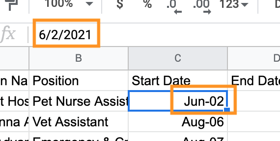
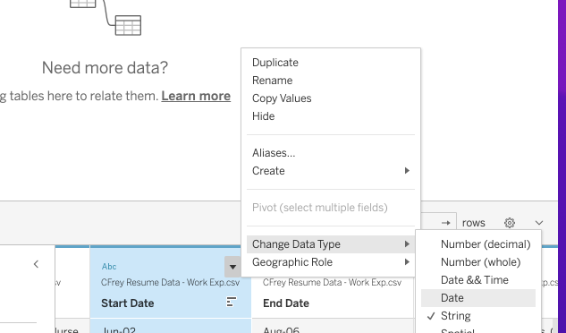
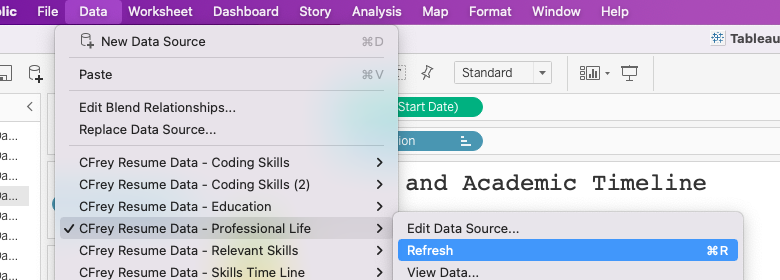

28.2. Exercises: Tableau Part 4 - Stories and Dates¶
28.2.1. Getting Started¶
28.2.1.1. Create Your Own Interactive Resume¶
Note
If you do not feel comfortable creating a resume about yourself, you may choose to create an interactive resume about a fictional character or historical figure of your choice.
At least one Gantt chart that displays a relevant timeline for your resume.
And at least one other type of visualization that is relevant to your resume.
28.2.1.2. Part 1: How to Create a Resume In Tableau Public¶
How to Create an Interactive Resume in Tableau.
Don’t feel limited with your visualizations here.
Browse the Interactive Resume Gallery, for inspiration.
You can download a viz that you like and explore how they created their resume.
Optional resources to help you build your Interactive Resume:
How to make an interactive resume in Tableau (50 min).
This video will teach you how to make a Gantt chart and a Lollipop chart.
Create Your Interactive Resume in Tableau Public? Video (48 min).
This video will teach you how to create an obsolescence chart, as well as how to customize a lollipop cart, and add links to your dashboard.
28.2.1.3. Part 2: Creating the Data¶
You are creating the data for this project, as it is your resume. In order to do this, you will need to use a spreadsheet program that will allow you to save and download CSV files. This could be Excel, Google Sheets, or Numbers. Tableau likes columnar formats, meaning you organize your data by columns. For example, you make a spreadsheet about volunteer work that has a column for the name of the organization/activity, the start date and end date, and a description.
Once your data has been entered, you will need to save and download your file. Make sure you download it as a csv file. We suggest creating a folder for your spreadsheets and remembering its location as you might be adding to it as you work on this exercise.
A few notes on your data:
Start and End Time:
If you don’t remember exactly when you started or ended an experience, use your best judgement and be consistent.
Also when you are adding dates into your spreadsheet, look in the data entry line to verify the formatting as well as the cell you are entering data into.
In this example, notice that cell C2 says “Jun-02” which the creator of the data set meant to be “June 2002”, but the entry line is formatting it as “6/2/2021”. By manually entering the date into the entry line, the correct format “6/1/2002” was entered and then uploaded to Tableau. Things to double check before you upload.
Formats: When you open a file in Tableau, you might notice that Tableau thinks your dates are numbers or strings.
You can convert these to dates in the preview page by selecting the column you want to change, clicking on the dropdown menu and selecting “Change Data Type” then pick what data type you want the value to be.
In this example, “Start Date” is a string not a date. Using the Dropdown menu, we were able to change data type from string to date.
Remembering Things Once Working In Tableau:
Once you start working in Tableau with your data, you might want to change your data.
There could be things you want to add, redesign, or you might have caught a typo.
You can modify your data. Go back to your spreadsheet and make your changes.
For example, you decided that you want to add location to one of your spreadsheets. Add the column (or columns) to your spreadsheet. Depending on the program you use, in Excel you might need to only save it to update all your changes, or if using Google Sheets you will need to download it again as a csv and then replace the old version with the new one. Once that is done, you can refresh your data in Tableau.
The data menu allows you to refresh your data. After refreshing, a notice window will appear informing you that “If you have modified filters or hidden fields you may be replacing important data. Are you sure you wish to proceed?” Select “Yes”. Make sure that you review your worksheet to make sure it functions correctly.
28.2.2. Submitting Your Work¶
When finished make sure to save and publish your work to your Tableau Public account. Copy the URL to your published Tableau project and paste it into the submission box in Canvas for Exercises: Visualization with Tableau Part 4 and click Submit.